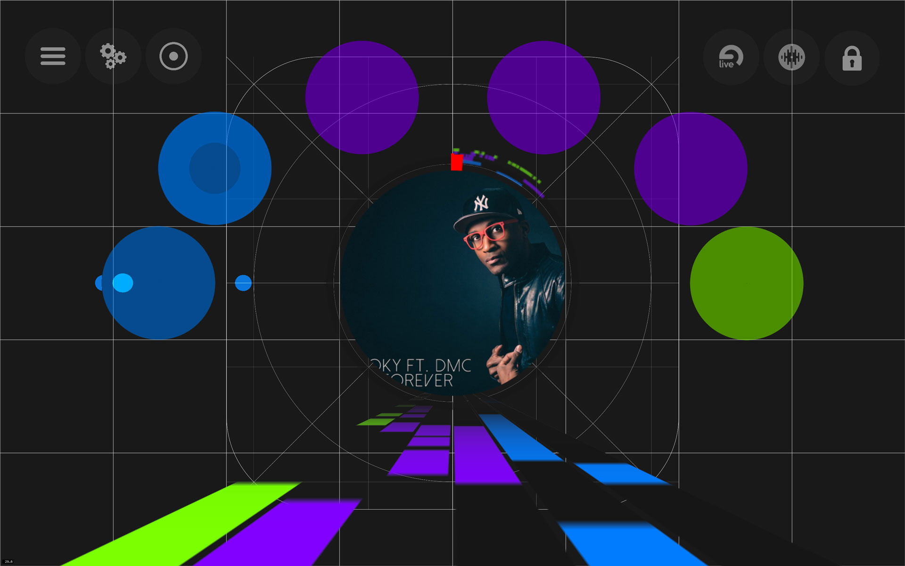

FX sounds controlled by your arm movements, wirelessly!
What did I Create?
Using the Myo armband from Thalmic Labs to control your favorite music production and performance tool in three dimensions. Record and playback saved interactions for a guided presise performance.
Visit Thalmic Labs
Visit Thalmic Labs
Donate and Download
Please donate to support the continuation of this project and gain access to the Beta release.
Donate and Download
Donate and Download
Why did I Create this?
Thalmic Labs ask me back in October 2013 to test there alpha prototype of the Myo. After inital tests I decided to port my Swoosh application over to their hardware, from here I envolved Swoosh into AirPhex.
EXPLAIN
How is this done?
Outputting MIDI and an audio tone Air Phex allows two way communication between music application like Ableton or Serato much like all MIDI enabled physical instruments.
Customise the MIDI parameters, type, color, or position in 3D space.
MODES
Recording Mode
Record and edit the activation of MIDI controllers dependant on the position of the track playing in Serato or Ableton Live.(+ any audio software with a MIDIClock output)
MODES
Game Mode
Playback your saved performances in game format

LIVE CAMERA FEEDS
All too unbeivable for your audience.
Live camera feed from your Go Pro, Cannon DLSL and wirelessly from your iOS device. Below are development videos entitled Debug > Perform > Repeat